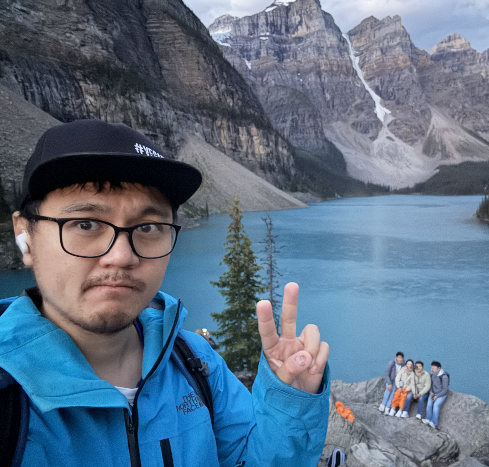

Mian Wei
Postdoctoral Fellow at Carnegie Mellon University
email address: mianwei@andrew.cmu.edu
Bio

If you find yourself reading this, you're in for a treat. Hi, I'm Mian Wei (first name pronounced me-anne or mayan, either works for me and last name pronounced way). I'm currently a Postdoctoral Fellow at Carnegie Mellon University working with Srinivasa Narasimhan and Ioannis Gkioulekas. I obtained my PhD at the University of Toronto working under Kyros Kutulakos. I've never done any course on web dev, so pardon my janky-looking website. I study computational imaging/cameras, which I describe as "the pursuit of imaging techniques that expand the capabilities of cameras to facilitate scientific understanding". My pre-COVID interest lied in understanding how active illumination can improve or augment computer vision algorithms of the past. Post-COVID during my PhD, I moved on to thinking about single photon imaging... a lot, which led to some success and lots of fun, notably with esteemed Sotiris Nousias.
Outside of Computer Science, I enjoy hiking, travelling, canoeing, kayaking, pretty much all forms of outdoor activities. Lately, I have been obsessed with walking, which turns out to be a much less trivial activity than I had initially thought. Perhaps I'll write about my walking escapades someday. One of my goals since moving to Pittsburgh is to cross all 446 bridges that the city has to offer before I leave. Sometimes, I try to make puns and most of the time they're not good.
Publications
Computational Imaging across Simultaneous Timescales
Mian Wei. University of Toronto 2025.
PhD Dissertation
Opportunistic Single-Photon LiDAR
Sotiris Nousias*, Mian Wei*, Howard Xiao, Maxx Wu, Shahmeer Athar, Kevin J. Wang, Anagh Malik, David A. Barmherzig, David B. Lindell, and Kiriakos N. Kutulakos. CVPR 2025. (Oral)
Project page
Passive Ultra-Wideband Single-Photon Imaging
Mian Wei*, Sotiris Nousias*, Rahul Gulve, David B. Lindell, and Kiriakos N. Kutulakos. ICCV 2023. Marr Prize, best paper award (2 out of 2161 accepted papers).
Project page
Dual-Port CMOS Image Sensor with Regression-Based HDR Flux-to-Digital Conversion and 80ns Rapid-Update Pixel-Wise Exposure Coding
Rahul Gulve, Roberto Rangel, Ayandev Barman, Don Nguyen, Mian Wei, Motasem A. Sakr, Xiaonong Sun, David B. Lindell, Kiriakos N. Kutulakos, and Roman Genov. ISSCC 2023.
Paper
A 39,000 Subexposures/s CMOS Image Sensor with Dual-tap Coded-exposure
Data-memory Pixel for Adaptive Single-shot Computational Imaging
Rahul Gulve, Navid Sarhangnejad, Gairik Dutta, Motasem Sakr, Don Nguyen, Roberto Rangel, Wenzheng Chen, Zhengfan Xia, Mian Wei, Nikita Gusev, Esther Y. H. Lin, Xiaonong Sun, Leo Hanxu, Nikola Katic, Ameer Abdelhadi, Andreas Moshovos, Kiriakos N. Kutulakos, and Roman Genov. VLSI 2022.
Paper
End-to-End Video Compressive Sensing using Anderson-Accelerated Unrolled Networks
Yuqi Li, Miao Qi, Rahul Gulve, Mian Wei, Roman Genov, Kiriakos N. Kutulakos, and Wolfgang Heidrich. ICCP 2020.
Paper
Dual-Tap Pipelined-Code-Memory Coded-Exposure-Pixel CMOS Image Sensor for Multi-Exposure Single-Frame Computational Imaging
Navid Sarhangnejad, Nikola Katic, Zhengfan Xia, Mian Wei, Nikita Gusev, Gairik Dutta, Rahul Gulve, Harel Haim, Manuel Moreno Garcia, David Stoppa, Kiriakos N. Kutulakos, and Roman Genov. ISSCC 2019.
Paper
Coded Two-Bucket Cameras for Computer Vision
Mian Wei, Navid Sarhangnejad, Zhengfan Xia, Nikita Gusev, Nikola Katic, Roman Genov, and Kiriakos N. Kutulakos. ECCV 2018. (Oral)
Project page
Bend-a-rule: a Fabrication-based Workflow for 3D Planar Contour Acquisition
Mian Wei and Karan Singh. SCF 2017.
Paper
Additive Models for Conditional Copulas
Avideh Sabeti, Mian Wei, and Radu V. Craiu. Stat 2014.
Paper